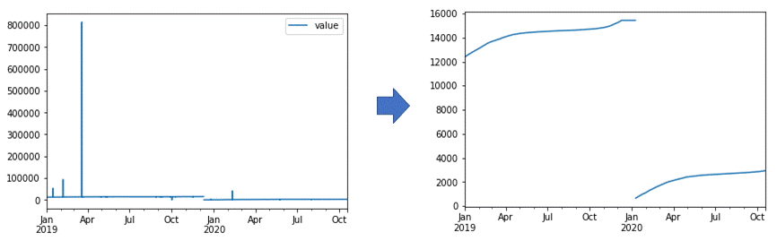

안녕하세요,
Data Driven Security를 꿈꾸는 안동현입니다.
주요 프로젝트 상세
H사 자동차 도메인 외부 데이터 수집 사업(2020.04~2023.02)
#MachineLearning #Crawling/Scraping #AnomalyDetection #Java #SQL #Python
수행업무
— 사내 수집 툴을 이용하여 자동차 도메인의 데이터(뉴스, 블로그, SNS 등)를 약 1,800개 사이트(17,000개 게시판)로부터 수집하고 고객사에 데일리로 전송하는 서비스 운영을 담당
— Java(Selenium) 기반 전송 프로그램의 코드 리뷰 및 이슈 관리
— CentOS 기반 수집/전송 배치 서비스 서버 이슈 관리
— 수집 데이터 전송 시에 불필요한 데이터 전송을 막기위한 스팸 필터링 모델 개발
수집된 SNS 데이터를 각 데이터 소스 별(Twitter, Youtube, Instagram)로 나누고 데이터셋을 라벨링한 후, 이를 바탕으로 머신러닝 알고리즘(베이지안 분류기, SVM)을 학습시켜 데이터 전송 시에 스팸으로 분류되는 데이터를 제외시킴으로써 전송데이터의 품질저하 방지
— Python을 사용하여 수집 에이전트 별 데이터 수집/전송량 추이를 분석하여 이상(abnormal) 탐지
통계기반 전송량 추이 분석을 통해 에이전트 이상 정도를 수치화하고 관리
K사 지식그래프 구축 사업(2020.08~2023.02)
#Crawling/Scraping #Java #SQL #Python
수행업무
— 55개 시중 금융사(은행, 보험, 카드)에서 판매중인 금융상품에 대한 수집 및 전송 서비스 운영 및 관리
— 사내 수집 툴을 이용한 수집 대상 웹사이트 Web Element 분석 및 웹 스크래핑 룰 생성
— Python + Selenium 기반 파일(PDF, EXCEL) 다운로더 개발
— Java 기반 전송 프로그램의 코드 리뷰 및 로그 분석을 통한 이슈 관리
최신 데이터 전송 로직의 MariaDB 테이블 스키마 오류 및 중복 데이터 체크 로직을 개선하여 기존 대비 데이터 전송량과 전송시간이 1/10, 1/3 수준으로 감소
한국지역난방공사 빅데이터 중장기 정보화전략 수립 및 시범서비스 구축(2020.10~2021.01)
#Python #Keras #tensorflow #SQL #RESTApi #TimeSeriesAnalysis
프로젝트 개요
난방공사의 열판매 데이터의 경우 각 지사에서 관리하는 검침계로부터 원격으로 전송되는 검침값에 해당
대부분의 원격 검침계의 경우 다소 노후화된 상태이며 그로인해 원격 검침값의 오류 및 누락이 굉장히 빈번하게 발생
검침계별 시간단위로 전송되는 검침값의 이상 상태를 빠르게 감지하고 열판매 수요 예측 모델을 개발
수행 업무
— 난방공사 전 지사의 과거 5개년 검침 데이터를 대상으로 누락값 및 이상치 보정을 수행하고, 이를 바탕으로 추후 실시간으로 발생하는 검침 데이터에 대하여 이상치 탐지 및 결측치 보정을 수행
— FLASK 기반 RESTApi 개발
분석 대상 데이터
각 지사의 5개년동안의 검침계별 시간 단위 원격 검침 데이터를 활용
시간별 원격 검침 데이터에는 다수의 결측치(missing value)와 이상치(outlier)가 존재
— 원격 검침 데이터 전송 시 노이즈로 인한 이상치
— 검침계의 교체로 인한 극대/극소 값
— 결측치
기존에 존재하는 이상치를 탐지 및 제거(null 값으로 치환 후 Last Observation Carried Forward 적용)
이상치 제거를 위해서는 데이터에서 빈번하게 발생하는 이상 패턴 유형을 Rule based 로 탐지하는 방법과 데이터의 시계열 특성을 이용하여 AutoRegressive based 방식을 혼합하여 사용


검침계별 데이터의 경우 비정상성을 띄기 때문에 시계열 분석에 적합하도록 차분(differentiate)을 통해 정상화 과정을 수행한 후 분석에 사용
모델 선정
모델 선정의 경우 크게 시계열 모형과 LSTM 기반의 딥러닝 모델을 선정하였으며, 선정 시에는 모델 비교를 통해 오차율 기준으로 좀 더 높은 정확도를 갖는 모델을 최종 선정
— 시계열 모형
ARIMA 모형의 경우 각 검침계별로 데이터의 특성이 달라 주요 하이퍼파라미터(p,d,q)의 최적값을 선정하는데 한계가 있다고 판단하였으며, 검침데이터가 강한 계절성을 띄기 때문에 지수 평활법의 일종인 Holt-Winters 계절성 모형으로 최종 선정
시계열 모형의 경우 단기 시계열 예측에 적합하고 적은 데이터로도 빠르게 예측이 가능하므로 실시간 처리에 적합하다고 판단
— Stacked LSTM
GPU가 없는 개발환경과 데이터의 유형을 고려하여 LSTM 류 모델로 실험을 하였으며, LSTM, Stacked LSTM, BiLSTM, Stacked BiLSTM 모델을 학습하여 가장 낮은 오차율을 보인 Stacked BiLSTM 모델을 선정
모델 적용 방안
실시간으로 발생하는 검침 데이터의 상황에 따라 누락 값 및 이상치 보정 처리 방안을 구분하여 적용
- 간헐적인 이상/누락 발생
— LSTM 모델 기반의 실시간 보정 처리
— 상대적으로 긴 시간동안 이상 및 누락 값이 누적되어 발생하는 경우 LSTM 기반 모델의 오차가 갈수록 커지게 되므로 적절한 threshold를 설정하여 허용가능한 범위 내에서 LSTM 모델 적용
- 장기간의 이상/누락 발생
— 상대적으로 긴 시간동안 누락되거나 이상이 발생한 경우 보간(interpolation) 및 시계열 모형을 이용한 데이터 보정 수행

성능(오차) 측정 방안
전체 데이터 중 이상치 제거 후 null 값이 가장 적은 상위 3개 검침계를 선정하고 마스킹 length에 따른 오차 변화 와 랜덤하게 1~5 사이의 길이를 갖는 null 값을 임의로 마스킹하고 모델별 성능을 비교 하였으며, 각 방법 별로 10번의 반복수행 후 MSE 평균으로 비교 수행

예측 결과 시각화 예시
수상 내역
쏘카X한국정보과학회 AI 영상 분석 경진대회 <대상>
#ComputerVision #Python #PyTorch
“블랙박스 주행영상 기반 운전자 사고 위험성 추정 모델링” 라는 주제로 참여
제안 배경
- 운전자의 사고 위험성 추정의 어려움
— 카셰여링의 확산으로 누구나 쉽게 차량을 운전할 수 있게 되었지만, 운전 미숙련자의 주행 또한 증가함
— 운전 미숙련자의 주행은 사고로 이어질 가능성이 높으므로, 미숙련자를 대상으로 적절한 보조수단 필요
- 운전 숙련도에 따른 가격구조 설정(Dynamic Pricing)
— 운전 숙련자의 경우 사고 발생가능성이 낮으므로, 숙련도에 따라 적절한 가격구조를 설계할 수 있음
— 숙련자에게 보상을 지급하거나 낮은 가격으로 카셰어링 서비스를 제공할 경우 고객을 지속적으로 서비스에 Lock-in 시킬 수 있음
제안한 아이디어
사고는 자차와 주위의 Object들 간의 거리가 급격하게 줄어들 때 발생한다고 가정
Object Detection(YOLOv3)과 Monocular Depth Estimation 알고리즘을 이용하여 운전자 주위 Object들과의 거리를 하나의 Feature Map으로 추출
Object Detection을 통해 사고의 요인이 되는 Object들의 bounding box 파악(i.e. 다른 차량, 이륜차, 행인 등)하고 Depth Estimation을 통해 Frame으로부터 각 픽셀의 depth를 추정
Frame에 대한 bounding box 정보(x,y,w,h)로 Object Mask를 생성하고 생성된 Depth map에 pixel wise multiplication 수행
최종적으로 생성된 feature는 주변 object들의 위치와 거리 관계를 담고있는 하나의 feature map이 됨
모델 선정
자차와 Object들간 관계(위치, 거리)의 시계열적 변화를 Convolutional LSTM 모델을 이용하여 모델링
일정 Time-window 동안의 Feature map sequence를 Input으로 설정하여, 일정 시간(프레임)동안의 운전자와 object들 사이 간격의 변화 이후 사고의 발생여부를 예측(Binary Classification)
Binary Classification을 위해 생성한 Sigmoid Layer에서 사고 발생으로 예측한 확률 값을 사고 위험도로 추정
사고 케이스 분석 예시
학습한 모델을 이용하여 Test 주행 영상의 사고 위험성을 추정
산출물
2021 IEEE 93rd Vehicular Technology Conference (VTC2021-Spring)
공동저자